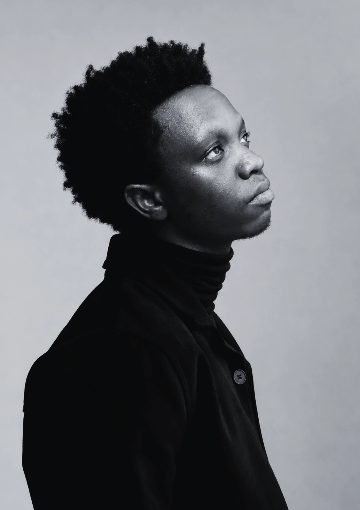

Building pathways for communities to thrive through health, evidence, and education, one program, one study, one intervention at a time.
Career growth, public health insights, community conversations, and humanitarian issues, delivered through accessible, evidence-grounded video content.
Visit the channel →A youth-centered social impact initiative focused on mentorship, mental wellbeing, leadership development, and community-driven action. LeafSpire brings together young people to grow personally, develop professionally, and contribute meaningfully to their communities through structured engagement and real-world activities.
Explore LeafSpire →
Based in Nairobi, Escriva works in public health across East Africa, building programs, evidence, and partnerships that help communities thrive, from immunization and research to digital health and youth-focused initiatives like LeafSpire.
Read the full story →